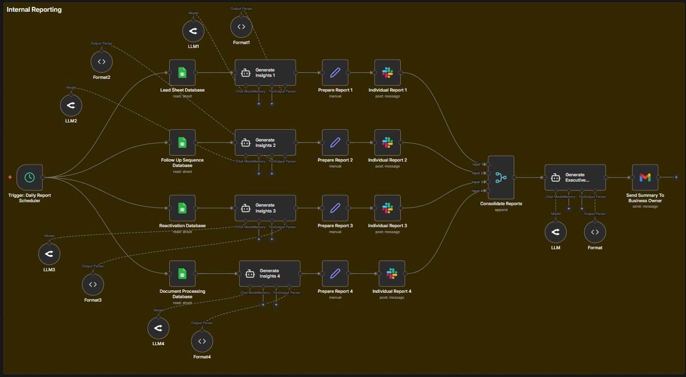

Internal Reporting System
Turn raw data into real-time decisions — automatically.

The Problem
Businesses waste hours manually gathering data from multiple tools just to understand what’s happening.
- Manual reporting takes hours every week
- Data is scattered across multiple platforms
- Decision-making is delayed due to lack of clarity
Teams spend more time reporting than actually improving performance.
Why This Matters
Decisions are only as good as the data behind them.
If your reporting is slow, your business moves slow.
This system ensures you always know what’s happening — in real time.
How The System Works
- Pulls data from multiple sources (CRM, Sheets, tools)
- Processes and analyzes key metrics automatically
- Generates insights using structured logic or AI
- Sends reports directly to Slack / Email / WhatsApp
- Triggers alerts for important changes or risks
- Runs daily, weekly, or in real-time
Use Cases
- Daily sales summary reports
- Weekly KPI dashboards for clients
- Pipeline and deal tracking alerts
- Operational status updates
- Performance insights for teams
Business Impact
- Save hours of manual reporting work
- Faster and smarter decision-making
- Real-time visibility across the business
- Improved team alignment
Example: Automating reporting can save 30–60 hours/month and prevent costly mistakes.
Once implemented, this becomes a core part of daily operations — businesses rarely go back.
Book This System →